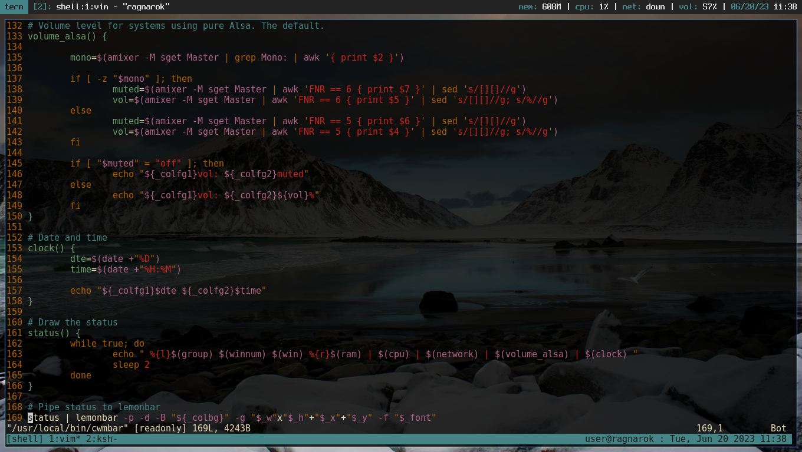

cwmbar: Relatively Simple Status Bar for cwm
I did a post last year discussing OpenBSD's Calm Window Manager, and always meant to follow it up with a post about my status bar setup. I was too busy to finish the bar, so in the mean time I was just using polybar, but I always wanted to take my dwm status bar script[1] and adapt it to cwm.
Either way, since cwm is included in my current project's live iso[2], I had no choice but to finish it (not that I'm complaining, any excuse is good to write shell scripts) so that it could be included.
This is slightly less simple than statubar.sh, simply because unlike dwm, cwm doesn't come with any built-in bar that shows window groups and window title by default. Luckily there are plenty of tools that do the job.
Note: a version specific to OpenBSD will be made, since ram usage, cpuload, network state and volume level all require different commands/scripting. Everything else in this bar version will work without a hitch, though.
Script and Screenshot
Script: https://raw.githubusercontent.com/IanLeCorbeau/dotfiles/master/.local/bin/cwmbar

Dependencies
- Lemonbar to actually draw the status on screen.
- xprop(1) to display the window group we're in.
- wmctrl to display the window number.
- wmutils' core[3] to display the window name.
- Standard unix utilities (grep, sed, awk, etc).
- Spleen font[4]
All this makes it a lot less simple than statusbar.sh (and the scripting ain't pretty to look at, if I can say so myself), but it does what it's supposed to.
Extra Notes
The group() function allows to set names for each window group if, like me, you
want to dedicate each group for a specific task.
The winnum() function displays the total number of windows. This is there since
inactive and/or non-focused groups are not displayed in the bar, and it can be easy
to forget that other groups may have opened windows. I would have preferred using the wmutils' lsw
tool, but it's default option only lists mapped windows in the current group, and its
option to list all windows will also list things like dunst and xcompmgr, which isn't
desired.
The wmutils tools are very useful in not only finding the window name, but also in setting up the width and position of the bar automatically, based on the properties of the root window. As a bonus, its tools can be used to extend cwm's functionality through scripts and keybindings. There ain't nothing better than that.
The volume_alsa() function can be replaced with volume-pa() if using pulseaudio.
Since I use pure alsa and I'm not familiar with pipewire, I can't create a function
for it. In other words "patch welcomed".
I chose the Spleen font because it looks great here, but naturally, it can be changed like everything else.
Bugs
There was a bug where the window name would disappear after opening a dialog window or dmenu, which was fixed by getting the id of the last window in the stack, rather than the focused window. This ensures that even when focus is lost, the name of the window that should be focused will be displayed in the bar.
I have still encountered this bug once or twice afterwards, but under different circumstances. Which circumstances? Can't even tell as I failed to reproduce the issue. Regardless, it had to be pointed out.
If you encounter any bug, you can contact me via email or open an issue in my dotfiles[5] repository on github.
[1] statusbar.sh
https://github.com/IanLeCorbeau/dotfiles/blob/master/.local/bin/statusbar.sh
[2] Ragnarok
https://github.com/RagnarokOS/iso/releases
[3] wmutils' core:
https://github.com/wmutils/core
[4] Spleen font:
https://github.com/fcambus/spleen
[5] dotfiles:
https://github.com/IanLeCorbeau/dotfiles